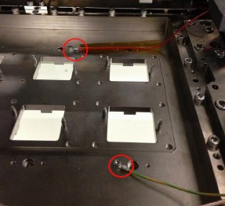

Service History
Subject: Xilinx NX1032XS Dynamic ESD EM AWARE evaluation
Handler Model: NX1032XS (S/N: 182347)
Controller: RC520 (S/N: 00504), DUBOX030 (S/N: 100004), PSUNT353 (P892)
Date: 31 Jan ~ 1 Feb 2013
Symptom
Xilinx NX1032XS Dynamic ESD EM AWARE evaluation.
Action
SEC Toyoki Tanaka installed ferrite cores to:
-power cables of SLK
-power cable before distribution to circuit breakers in PSUNT
-Heater power cables after circuit breakers(above handler) for SLK heaters
Still have ESD events.
-Enable only Test Arm 2
-Grounding wire still connect to Index Test Hand
-Socket Layout Kit (SLK) from EPSON attached to Test Arm 2 (With or without Aluminum tape shield on SLK has effect on noise)
-Connect extra grounding wire to Input Shuttle 2's slide plate top surface
-shield the Input Shuttle 2's Heat Insulation Plate (that cover the slide plate) surrounding with Aluminum tape
- Socket Guide Jig attached with Socket heaters enabled
- Heat up to 80DegC hot mode
- Dry Run without device at 80% speed
- Observed no events for interval of 2 mins and 5 mins.
-removed Grounding wire from both Index Test Hand
-swapped back to original Socket Layout kit (SLK), no shield on SLK
-shield the Both Input Shuttles's Heat Insulation Plate (that cover the slide plate) surrounding with Aluminum tape
-remove ground wire on Socket Guide jig
Ambient mode run with devices, for 30 mins with 11 events
-put back ground to socket Guide jig
Ambient mode run with devices, for 20 mins with 9 events
-ground wire go around Input Shuttles 2's Heat Insulation Plate (that cover the slide plate) and shield with Aluminum tape
-shuttle 2 enabled only
Ambient mode run with devices, for 15 mins with 2 events (significant reduction in ESD event)
6 Feb 2013
A. Repeatable check for Ambient mode.
1. Both shuttle mode.
2. Contact Blade: Index1: PEEK / Index2 Semitron
3. With Dock plate.
4. NO Load board.
5. Sticked AL tape ON
6. Grounding wires on compliance unit for each test head
B. Hot mode check.
1. Both shuttle mode.
2. Contact Blade: Index1: PEEK / Index2 Semitron
3. With Dock plate.
4. NO Load board.
5. Sticked AL tape ON
6. Grounding wires on compliance unit for each test head
Both of Ambient & Hot mode, we managed to get ZERO event for 60 min.
Please refer to the attached files.
We still have temperature issue and we are going to modify the design of the contact blade.
6~8 Feb 2013Ambient mode with devices:
1. Both shuttle mode.
2. Contact Blade: Index1: PEEK / Index2 Semitron
3. With Dock plate(socket guide base jig) grounding.
4. NO Load board.
5. Sticked AL tape on heat insulation plate for Input Shuttle2
6. Grounding wires on compliance unit for each test headResult: 0 event in 60min
Hot mode devices:
1. Both shuttle mode.
2. Contact Blade: Index1: PEEK / Index2 Semitron
3. With Dock plate(socket guide base jig) with grounding.
4. With Load board.
5. Sticked AL tape on heat insulation plate for Input Shuttle2
6. Grounding wires on compliance unit for each test head
7. AL shield above the flexible cable chain for Output Shuttle 2Result: 0 events in 60mins
Cause
Remarks
1 Feb 2013
The following helps to remove ESD events:
- Aluminum tape shield on the Heat Insulation Plate for Input Shuttle 2
- Grounding to individual compliance unit cylinder on Socket Layout Kit
- Aluminum tape shield above Output Shuttle 2 flexible cable chain
6 Feb 2013
Grounding wire added for each compliance unit of SLK helps to reduce the ESD event to 0 for Test site.
Ground added to socket guide base jig (docking plate).

8 Feb 2013
Aluminum shield above the flexible cable chain for Output Shuttle 2 helps to reduce ESD event to 0 for Output area.
Xilinx has specified change kit as Black hard anodize for slow-leaking of charge,
but Epson’s opinion is this should be coated by Electroless Nickel (EN coating) for preventing charge.
For Xilinx, for Change kit coating as long as it meets the below specs:
Change Kit surface resistivity readings must be within specs of 1 x 105Ω < R < 1 x 10¹¹Ω